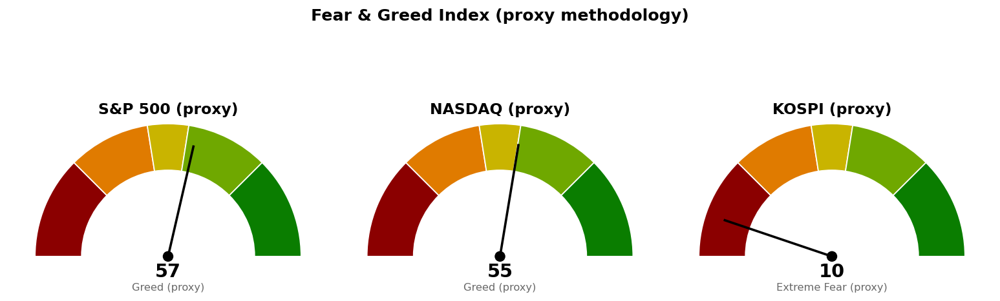

| 직전에 건 조건 | 판정 | 근거 |
|---|---|---|
| S&P 500 기준선 7,794 (종가 상회) | 충족 후 반납 | 10/9 7,812 · 10/12 7,807 · 10/13 7,805, 10/14 7,719 |
| 나스닥 기준선 27,244 (종가 상회) | 충족 후 반납 | 10/9 27,366 · 10/12 27,246, 10/13 27,204 |
| 도착지 S&P 500 7,950 · 나스닥 28,068 | 미충족 | 10/9 이후 고가 7,821 · 27,395 |
| 나스닥 다음 지지 26,992 (종가 하회) | 충족 | 10/14 26,693 |
| 나스닥 사다리 1차 26,680 (장중) | 충족 | 10/14 저가 26,602 |
| 나스닥 2차 26,261 · 취소선 25,967 | 미충족 | 10/15 저가 26,309 |
| S&P 500 다음 지지 7,665 · 사다리 7,653 · 7,578 · 취소선 7,517 | 미충족 | 10/15 저가 7,670 · 종가 7,744 |
| 코스피 취소선 6,600 · 다음 지지 6,409 (종가 하회) | 충족 | 10/12 6,384 |
| 30년 금리 5.286% (종가 하회) | 미충족 | 10/15 5.429% |
미국 두 지수의 10월 9일 회복은 S&P 500이 세 세션, 나스닥이 두 세션 유지한 뒤 반납했고 도착지까지 가지 못했습니다. 직전이 방향을 말하지 않았으므로 방향 오판은 없지만, 회복 판정 하루 만에 상방 갈래로 읽은 것은 지나고 보니 이른 판정이었습니다.
코스피는 직전이 적은 대로 6,600을 잃고 6,409까지 내려갔으나, 직전은 6,409 아래를 적지 않았고 가격은 그 아래로 958포인트 더 내려갔습니다. 취소선 판정 종가 6,384가 6,600보다 216포인트 아래여서, 10월 8일에 닿은 두 회차(6,673 · 6,651)를 그 종가로 매도했다면 손실은 계좌 -0.17%(-232,631원)로 직전이 적은 -0.04%(-51,915원)의 네 배를 넘습니다. 직전이 경고한 종가 건너뛰기가 그대로 일어났습니다.
S&P 500 계획은 어느 선도 새로 닿지 않아 그대로 유지합니다. 나스닥은 다음 지지 26,992를 종가로 잃었으므로 그 가격을 기준선으로, 직전 기준선 27,244를 도착지로 옮기고, 그 아래 다음 지지를 26,432로 새로 겁니다. 사다리 2차와 취소선은 그대로입니다. 코스피는 10월 12일에 직전 계획이 끝나 아래 가격은 전부 새 계획입니다.
20일선·50일선은 지수이동평균입니다. 코스피 값에는 10월 16일 장중 봉이 들어 있습니다.
기준선까지 50포인트로 한 세션 안에 닿는 거리입니다. 90일 박스(7,328~7,828) 안쪽 판정은 직전 중립에서 분산 우위로 바뀌었습니다(지지 테스트마다 매도 거래량 증가, 저점 절하, 상승봉 대 하락봉 거래량비 0.99).
현재가는 7번 반응한 가격대(26,645~26,789) 안에 있습니다. 90일 박스(24,897~27,296) 안쪽 판정은 중립입니다(저점 절하, 거래량비 1.06).
코스피는 6번 반응한 가격대(5,730~5,746) 하단에서 장중에 움직이고 있으며, 오늘 종가는 아직 판정이 아닙니다. 사다리는 한 회차만 둡니다 — 5,263 아래 다음 근거가 박스 하단(4,908~4,997)이라 2차를 두면 취소선과 0.4배 변동폭 안에 붙습니다. 180일 박스(4,908~8,789) 안쪽 판정은 매집 우위(저점 절상, 거래량비 1.12)이지만, 이평 역배열·하락 추세로 국면 후보는 하락 구간입니다. 세 지수 모두 기준선 아래로 방향이 같으며, 코스피 다음 세션 시가는 오늘 밤 뉴욕 결과가 먼저 정하므로 코스피 계획은 미국장에 종속됩니다. 경로를 말할 근거가 없어 이번에도 방향을 말하지 않고 기준선과 두 갈래만 냅니다. 남은 회차를 전부 집행하면 계좌의 14%(19,529,776원), 모두 취소선에서 멈추면 계좌 -0.33%(-459,178원)이며, 10월 12일 코스피처럼 종가가 취소선을 건너뛰면 손실은 더 커집니다.
| 지수 | 값 | 등락 | 시가 | 고가 | 저가 |
|---|---|---|---|---|---|
| S&P 500 (10/15 종가) | 7,744 | +0.33% | 7,687 | 7,754 | 7,670 |
| 나스닥 종합 (10/15 종가) | 26,713 | +0.08% | 26,381 | 26,754 | 26,309 |
| 코스피 (10/16 12:01 장중) | 5,730 | +3.17% | 5,654 | 5,745 | 5,590 |
| 니케이 225 (10/16 장중) | 65,551 | +1.75% | 64,925 | 65,689 | 64,801 |
코스피 일별 종가는 10/8 6,626 → 10/12 6,384 → 10/13 6,035 → 10/14 6,009 → 10/15 5,554입니다.
미국 주도섹터는 기술에서 헬스케어로 바뀌었습니다. 기술은 다섯 브리핑 연속 줄어 0 아래로 내려갔고, 20일 기준 상위 셋이 헬스케어·필수소비재·에너지입니다.
한국 섹터는 테마형 ETF 기준이라 미국 업종 ETF와 성격이 다르며, 코스피가 -16% 빠진 구간의 초과수익이라 절대 수익이 플러스라는 뜻이 아닙니다. 반도체는 5일 기준 지수보다 6.93%포인트 약해 20일 값이 직전 +16.71에서 +8.42로 줄었습니다. 이번 브리핑에서는 종목 발굴을 돌리지 않았습니다.
| 항목 | 값 | 직전 대비 |
|---|---|---|
| 미국 경기선행지수 (2026년 9월) | 101.00 | 8월 대비 +0.05 · 새 발표, 8월은 100.96 → 100.95로 수정 |
| 한국 경기선행지수 (2026년 9월) | 102.53 | 8월 대비 -0.13 · 새 발표, 8월은 102.87 → 102.66으로 수정 |
| 미 10년 명목금리 | 5.19% (10/14 확정) · 10/15 지수 시세 5.089% | 10/13 대비 -0.02%포인트 · 시세 -0.101%포인트 |
| 미 10년 기대물가 | 2.32% (10/15) | 10/14 대비 -0.03%포인트 |
| 미 10년 실질금리 | 2.84% (10/14) | 10/13 대비 -0.04%포인트 |
| 유가 (WTI) | 확정치 101.91달러 (10/14) · 선물 95.93달러 (10/15) | 확정치 +1.05달러 · 선물 +0.88% |
| 달러지수 (광의) | 121.60 (10/9) | 10/8 대비 +0.16 |
| 변동성지수 (VIX) | 16.46 (10/15) | -2.43% · 백분위 51.8 (직전 28.4) |
경기선행지수(OECD가 장기 평균을 100으로 놓고 경기 방향을 몇 달 앞서 보여주는 지표)는 9월분이 새로 나왔습니다. 한국은 8월 값이 하향 수정되면서 7월 102.69 → 8월 102.66 → 9월 102.53으로 두 달 연속 내려갔고, 미국은 상승폭이 유지됐습니다. 10월 9일 → 14일 명목금리 -0.05%포인트 중 실질금리가 -0.07%포인트, 기대물가가 +0.02%포인트로 하락분은 실질금리에서 나왔고, 같은 방향으로 금 선물이 10월 15일 +2.01%(4,190.50달러) 올라 실질금리와 일치합니다. 달러지수는 10월 9일 이후 값이 없어 판정하지 않았습니다. WTI 확정치가 98.73 → 101.91달러로 오르는 동안 기대물가는 2.33~2.35%에 머물러 따로 움직였습니다.
1. 미국 반도체주 시가총액 2조 달러 증발 위기, 'AI 매도' 확대 (Reuters · MarketWatch) 기술(XLK) 20일 초과수익이 0 아래로 내려가고 나스닥이 다음 지지 26,992를 잃은 것과 같은 사건입니다. 한국 반도체 ETF도 5일 기준 지수보다 6.93%포인트 약했습니다.
2. 기술주 매도에 대형 제약주 사상 최고가 근접 — 국채·방어 업종으로 이동 (MarketWatch) 헬스케어(XLV)가 20일 +3.57로 미국 주도섹터가 된 것과 같은 방향이며, 10년 금리 시세가 10/15 -0.101%포인트 내린 것도 국채 매수와 맞습니다.
3. 매도·금리 상승이 AI 데이터센터 거래 붐을 시험 (Reuters) 장부의 AI전력 테마(LS ELECTRIC · GE Vernova · Bloom Energy · Fluence Energy · AI전력기기 ETF)와 직접 걸립니다. 한국 AI전력기기 ETF는 20일 -6.45로 한국 섹터 최하위입니다.
230건을 받아 10건을 추렸고, 나머지 7건은 기술주 선별 매수 권유·중간선거 시나리오·Anthropic 재무 보도·백악관 기부·테슬라 시연 등 기준선 판단과 관계가 약해 뺐습니다. 코스피 10/12~15 하락을 직접 다룬 기사는 수집 결과에 없었습니다. 뉴스 원천 중 Yahoo Finance Top Stories는 이번에 비어 있었습니다.

세 점수 모두 공식 CNN Fear & Greed 지수가 아니라 모멘텀·상대강도·변동성·안전자산 선호 네 항목으로 계산한 대용 지표입니다. 변동성 항목은 자기 과거 3년 분포에서의 자리로 산출하며, 미국은 변동성지수 16.5가 백분위 51.8(755일), 코스피는 내재변동성 지수가 없어 20일 실현변동성 연율화 42.5%가 백분위 82.1(711일)입니다. 네 항목은 S&P 500 59.2 · 51.9 · 48.2 · 68.0, 나스닥 57.4 · 46.2 · 48.2 · 66.6, 코스피 0.0 · 29.4 · 17.9 · 0.0입니다. 코스피 점수는 장중 값을 담고 있습니다.
| 날짜 (한국시간) | 이벤트 | 확인할 것 |
|---|---|---|
| 10월 16일 15:30 | 코스피 마감 | 5,451 · 6,000 대비 종가 |
| 10월 17일 05:00 | 뉴욕 마감 (미국 10/16) | S&P 500 7,794 · 나스닥 26,992 종가 회복 여부 · 30년 금리 종가 |
| 10월 22일 (미국) | 신규 실업수당 청구 | 고용 |
| 10월 28일 (미국) | FOMC | 금리 결정 |
| 10월 29일 (미국) | PCE 물가 · GDP | 물가와 성장 |
| 11월 6일 (미국) | 고용보고서 | 고용과 실업률 |
| 11월 10일 (미국) | CPI | 물가 |
장부 보유 16종목, 9월 24일 이후 새 체결 기록 없음. 계좌 평가액 139,498,400원(9월 21일 등록값). 국면은 코스피 5,554가 200일 이동평균 6,403 대비 -13.25%(10/15 종가, 10/13부터 이탈), S&P 500 7,744가 7,268 대비 +6.56%(10/15 종가)입니다.
1. 매수 쪽 — 지금 가격에 세 지수 모두 살 자리가 없습니다. 다음 회차는 S&P 500 7,653 · 나스닥 2차 26,261 · 코스피 5,263의 장중 터치입니다. 2. 나스닥 사다리 1차 26,680이 10월 14일에 닿았는데 장부에 지수 상품 매수 기록이 없습니다. 매수했으면 수량·단가·날짜를 알려 주십시오. 코스피 직전 두 회차(6,673 · 6,651)를 샀다면 10월 12일 종가 기준 사다리 취소 대상이었습니다. 3. 한국 보유 종목은 국면 이탈 규칙에 따라 전량 매도 (국면 이탈)입니다 — LS ELECTRIC (010120.KS) 39주 · TIGER 미국배당다우존스 (458730.KS) 1,006주 · 한화손해보험 (000370.KS) 50주 · 현대해상 (001450.KS) 10주 · TIGER 코리아AI전력기기TOP3플러스 (0117V0.KS) 400주 · SOL 반도체전공정 (475300.KS) 350주. 10월 14일 현대해상 41,950원 눌림 진입 신호는 이 국면에서 집행하지 않습니다. 이 규칙은 지수 사다리에는 적용되지 않습니다. 4. 오늘 코스피 종가로 판정하십시오 — 5,451 아래면 하방 갈래이며 다음은 5,263 1차 회차, 6,000 위면 상방 회복이며 도착지는 6,409입니다. 5. 오늘 밤 뉴욕 종가로 판정하십시오 — S&P 500 7,794 · 나스닥 26,992 위면 상방 회복(도착지 7,950 · 27,244), S&P 500 7,665 · 나스닥 26,432 아래면 하방 갈래입니다. 6. 신규 종목 편입은 30년 금리가 종가로 5.286% 아래일 때 재개합니다(10/15 종가 5.429%, 직전 5.628%). 7. 미집행 매도 신호: USA Rare Earth (USAR) 10회(직전 8) · Netflix (NFLX) 5회 · GE Vernova (GEV) 4회(직전 3) · LS ELECTRIC (010120.KS) 3회(직전 1) · Alibaba (BABA) 3회(직전 2) · MP Materials (MP) · TQQQ 각 2회(직전 1) · AMD · 한화손해보험 (000370.KS) · 현대해상 (001450.KS) 각 2회, 장기 보유인 Fluence Energy (FLNC) 6회 · LightPath (LPTH) 2회는 기록만 쌓입니다. 매도했으면 수량·단가·날짜를 알려 주십시오. 사실을 적을 뿐 매도를 권하는 것이 아닙니다.
다음 세션에 볼 것 하나 — 오늘 코스피 종가가 5,451 위에서 마치는지입니다.
ATR(하루 평균 변동폭): 최근 14일 동안 하루에 오르내린 폭의 평균. · 지수이동평균(EMA): 최근 가격에 더 무게를 준 평균 가격선이며 20일선·50일선은 이 방식입니다. · 200일 이동평균: 최근 200거래일 종가의 단순 평균. · RSI(상대강도지수): 최근 14일 오른 폭과 내린 폭의 비율을 0~100으로 나타낸 값. · 확장선: 직전 상승 폭을 위로 연장해 계산한 가격. · 20일 초과수익: 최근 20거래일 수익률에서 기준 지수 수익률을 뺀 값. · VIX(변동성지수): S&P 500 옵션에 반영된 향후 30일 예상 변동폭. · FOMC: 미국 연준의 금리 결정 회의. · CPI: 소비자물가지수. · PCE: 개인소비지출 물가지수. · 기대물가: 명목금리와 물가연동채 금리의 차이로 시장이 보는 평균 물가상승률. · 실질금리: 물가연동국채가 직접 주는 금리.
이 문서는 참고 정보이며 투자자문이 아닙니다. 투자 판단과 그 결과에 대한 책임은 투자자 본인에게 있습니다.